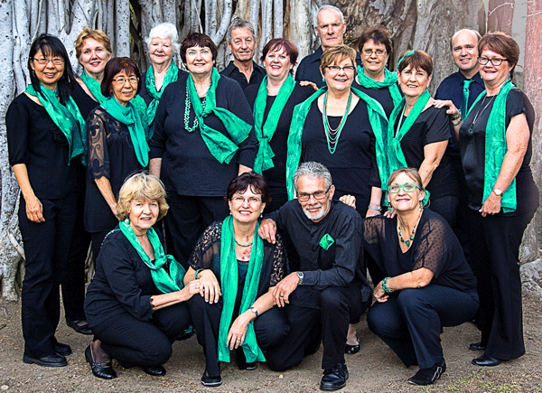

Upcoming Events
SUNDAY VARIETY CONCERT
Presented by Friends of the Theatre
2pm Sunday 26 April at Pimlico Performing Arts Centre
Fulham Road
Enquiries-please phone 4723 7879
Aviva Srring Quarlet
The superb foursome return with their final concert for 2015, bringing their signature style of classical and modern music to the masses in their own fresh and entertaining style.

2 pm Sunday 14 June at Civic Theatre building
$25 for Adult
$20 for Concession
And Children 12 and under free!
Buy ticket at Here!
Townsville Concert Band

2pm Sunday 28 June at Townsville Civic Theatre
Buy ticket at Here!
Pimlico choir

2pm Sunday 6 September at Townsville Civic Theatre
Buy ticket at Here!
Allegro choir
2pm Sunday 22 November at Townsville Civic Theatre
Buy ticket at Here!
Sponsors
 Townsville City Council
Townsville City Council
The Council's Partnerships and Sponsorships scheme provides vital core funding which enables us to maintain the administrative base for all our other activities, and also provides the premises which house our office space.
The Council also assists with the performance venues for our concerts and workshops.

 Queensland Government
Queensland Government
The Gambling Community Benefit Fund has assisted us to obtain office equipment and sound and lighting equipment for our productions.